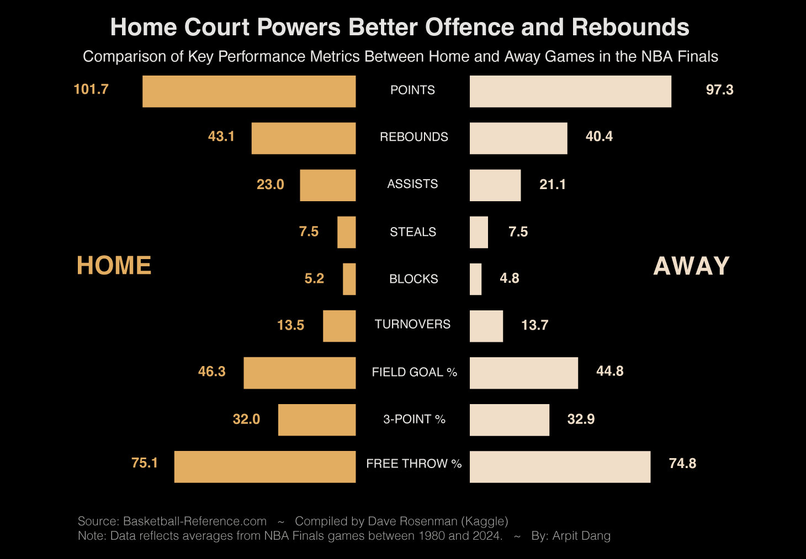
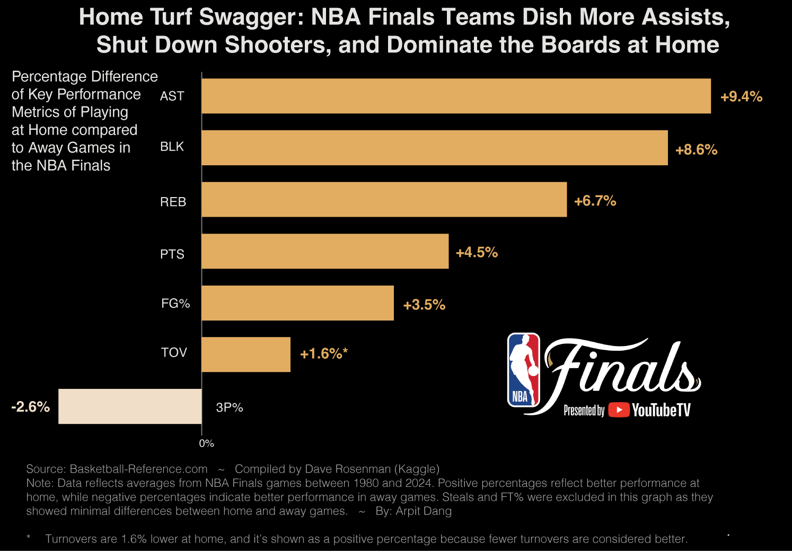
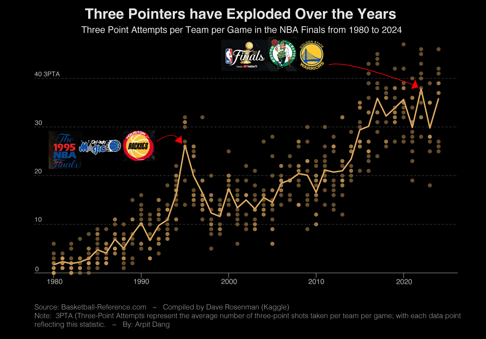
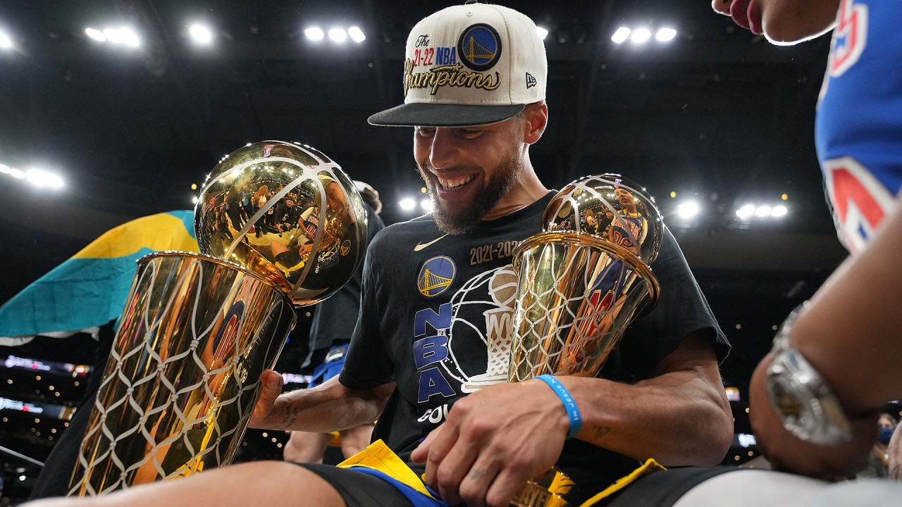
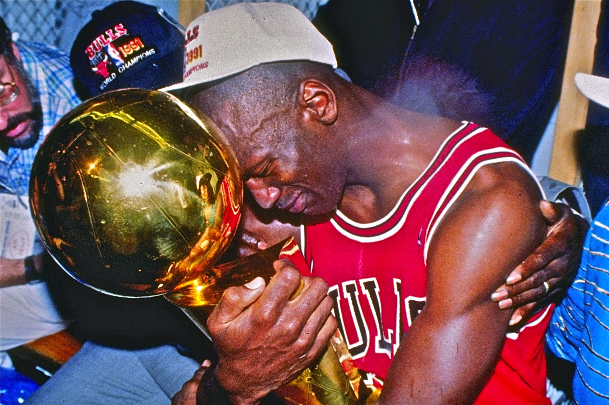
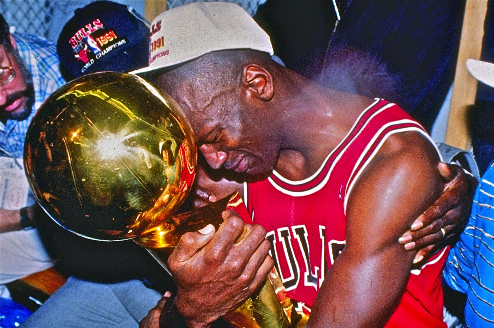

I first got hooked on basketball through the NBA Finals. I still remember the 2011 series between the Dallas Mavericks and the Miami Heat. Everyone around me kept saying that LeBron James was the best player in the league. I didn’t know much at the time, but I tuned in, curious to see what greatness looked like. Instead, I watched LeBron score just 8 points in a crucial game. It was confusing, and honestly, disappointing.
The very next year, something changed. LeBron and the Heat returned to the Finals, this time facing the Oklahoma City Thunder. And this time, he delivered. He finally won his first NBA championship, and I was captivated. It felt like watching someone rewrite their legacy in real time.
By 2013, I wasn’t just casually tuning in. I was all in. I followed the entire playoffs, not just the Finals. Still, there was something special about those biggest games—the pressure, the narratives, the moments that defined careers.
That is why I chose to tell the story of the NBA Finals. Because for so many fans, like me, it is where the obsession begins.
When I first started following the NBA, I was confused by how long the regular season was. 82 games felt excessive. And yet, more than half the teams still made it into the playoffs. Now, with the play-in tournament added, nearly two-thirds of the league has a shot at the postseason. It made me wonder if the regular season really mattered all that much.
Over time, I started to notice a trend. Star players were sitting out more often. In the 1990s, players missed an average of just 10.6 games. By the 2020s, that number had risen to nearly 24 for star players. Load management has become a strategy. Teams and players were focused on one goal: being ready for the playoffs.
Still, the regular season isn't meaningless. Finishing higher in the standings comes with one key advantage—home court. And when playoff games are often decided by just a few points, playing at home can be the edge that tips the series. That’s what made me want to explore the real impact of home court advantage.
 After looking at the numbers, I’ve come to realize that the regular season does matter. Teams tend to perform better both offensively and defensively during this stretch. The only dip seems to be in three-point percentage, but even then, the fight for home court advantage throughout the playoffs is clearly worth it.
But then I came across something interesting. Some studies suggest that box score stats—especially assists and blocks—might be biased in favor of the home team. Apparently, scorekeepers may be more generous when logging these stats for the home side. It made me think. Assists and blocks also happen to be the categories with the biggest statistical differences between home and away games.
So now I’m left wondering: if some of these home court advantages are partly inflated by biased reporting, how much does home court actually matter?
In the mid-2010s, the NBA began to feel different. The three-point shot exploded in popularity, largely thanks to the influence of one player—Stephen Curry. His range, speed, and confidence from deep changed the rhythm of the game. With Curry leading the charge, the Golden State Warriors reached five straight NBA Finals from 2015 to 2019 and walked away with three championships.
Watching it all unfold, I couldn’t help but wonder—was this shift the result of one generational talent, or was it something that had been building for years? Had the league always been heading in this direction, or did Curry simply accelerate a change that was already in motion?
 As I dug deeper, I realized that the rise in three-point attempts wasn’t something that started with Stephen Curry. The trend had been building for decades, slowly gaining momentum since the 1980s. Curry didn’t invent the three-point revolution; he just became its greatest symbol.
Still, it’s fitting that when I looked at the data, the NBA Finals with the most three-point attempts per team per game did involve Curry. It was the 2022 Finals, with the Golden State Warriors facing off against the Boston Celtics. In many ways, it felt like the natural peak of a movement that had been growing for years.
Over the years, my favorite player became James Harden. I admired his scoring ability and creativity on the court. But as time went on, he faced growing criticism for not delivering when it mattered most. Despite averaging the third-highest points per game in a regular season—36.1 PPG, behind only Wilt Chamberlain and Michael Jordan—the narrative around Harden was that he often came up short in the playoffs.
It made me curious. I wanted to see which players actually rose to the occasion when the pressure was at its highest. To explore this, I visualized the ten greatest increases in points per game from the regular season to the NBA Finals. I focused only on Finals MVP winners, figuring that these players would be the true superstars who elevated their games when it mattered most.
 

When I looked at the results, it was clear that Michael Jordan and Shaquille O’Neal elevated their games more than anyone else in the NBA Finals compared to their regular season performances. What stood out even more was that they didn’t just do it once—they did it multiple times. It’s no surprise they are both considered among the greatest players in NBA history.
Interestingly, one name was missing from the list: LeBron James. Despite his incredible career and countless Finals appearances, he didn’t show the same jump in scoring from the regular season to the Finals. It was a reminder that greatness can take different forms, and that even the best have different paths to building their legacies.
NBA Finals Teams Dataset: Compiled on Kaggle
Source: Basketball-Reference
NBA Finals MVP Dataset: NBA Finals MVP List and Stats
NBA Load Management Stats: Article Regarding Load Management
NBA Scorekeeper Bias: Study Regarding Scorekeeping Bias